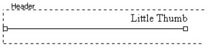
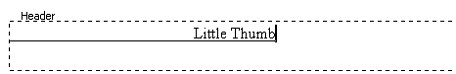
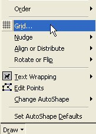
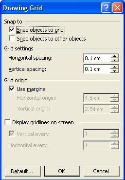
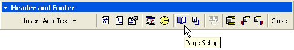
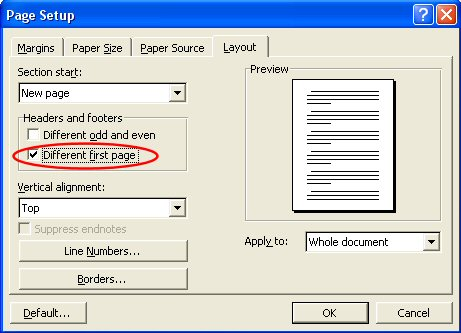

Free
computer Tutorials
|
Free
computer Tutorials
|
|
 home home |
|
|||||
How to Draw Lines with Microsoft WordIn previous sections, you learnt how to enter text in the Header area of the page (here), and how to draw a line under text in the Header (here). In this part, we'll see how to use the Drawing Grid, so that we can move our line right under the text. At the moment, out Header looks like this:  But we want it to look like this:  At the moment, our line jumps too far when we try to move it up. This means we can't get the precise alignment we need. To solve it, the Drawing Grid is needed. The Drawing GridClick the word "Draw" on the Drawing toolbar: When you do, you get a pop up menu. Select "Grid" from the pop up menu by clicking on it with the left mouse button, as in the image below.  The following dialogue box appears. It lets you set how far drawing objects will jump when you move them about.  The section of the dialogue box to concentrate on is "Grid settings". Yours will probably be 0.32 cm for the Horizontal and Vertical spacing. Click inside these two text boxes and change yours to the settings above. Click OK when you have finished. (If your measurements are not in centimetres, click Cancel on the box above. Then from the Word menu bar, click Tools > Options. Click on the General tab. At the bottom, change the Measurement Units to centimetres.) Click you line in the Header area so that the two white boxes are on the ends. In other words, select your line. Now try to move it up again. With your new settings, you should be able to move your line precisely into place. Like the one below: Your Header and Footer toolbar should still be displayed. We need one thing from the toolbar, and that's the Page Setup option. This is because we don't want our Header to appear on the first page. We want our Header to start on page two. The Page Setup icon looks like this:  When you click Page Setup, the following dialogue box appears: 
We can get a good look at what our Header looks like from Print Preview. As it is, the Header is hard to see when the Header and Footer toolbar is closed. It's all greyed out and faint.
Learn about Print Preview in Microsoft Word --> |
||||||
|